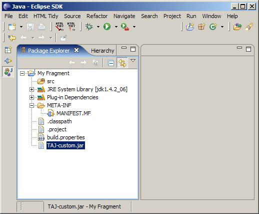
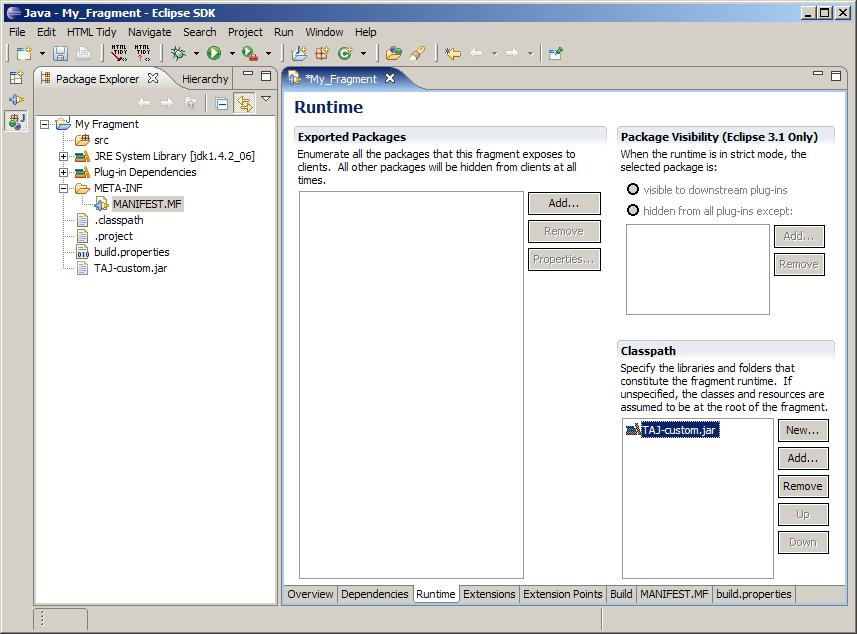

Extending the plug-in - The advanced way
A more Eclipse conforming way to extend the Checkstyle plug-in would be to provide a so called fragment.
Fragments are extensions to a plug-in that get merged in to the original plug-in - so these fragments get basically
integrated into the plug-in as if they were part of the original plug-in.
This mean they have no life cycle on their own but share the life cycle of the plug-in they extend.
While just copying some jars into the plug-in directory is a very simple way to extend the Checkstyle plug-in, providing
a fragment for custom checks is more complicated, but gives you some other powerful options:
-
Your extension to the plug-becomes self contained - no need to copy anything into the plug-in directory
-
You can provide an update site to deliver the fragment to your users
-
You can make use of the extension-points the Checkstyle plug-in provides (for filters etc.)
So here are the steps for creating a fragment that adds a custom check library to the Checkstyle plug-in:
- Create your custom .jar like described
here
.
- Create a new fragment project


Choose the Checkstyle plug-in from the list of plug-ins that appears when you hit the Browse... button.
Finish creating the fragment project by pressing Finish.
- Copy your jar file containing you custom checks into the fragment project

- Open the MANIFEST.MF file and add your custom library to the fragments classpath

Don't forget to save the manifest editor.
-
To "build" your fragment simply use the export wizard


-
Install the fragment to your Eclipse just like you would install a plug-in
-
(Re)start your eclipse with the -clean option to make sure the changes get picked up